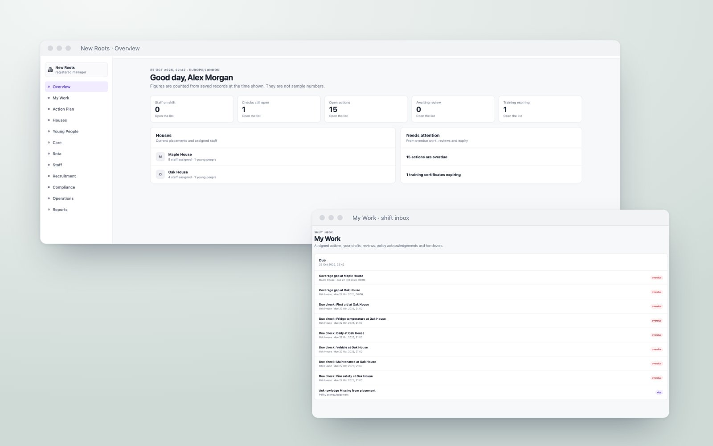
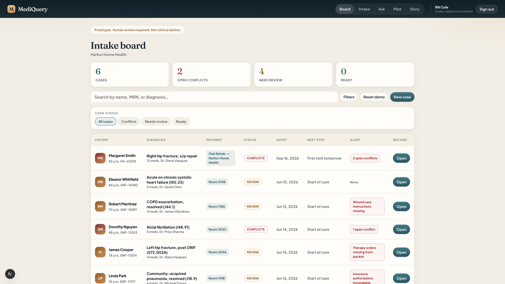

Biography
Parth Harish is a software engineer at RegKeyAI, building agents that draft FDA submissions, and an M.S. Data Science student at Harvard. Before that he was a machine learning engineer at SelectorAI and Amazon, working on network traffic models and LLM evaluation for Alexa.
He earned his B.S. in Computer Science and Statistics from Carnegie Mellon University and earlier interned at MIAX Exchange on high-throughput options market data. Outside of work, he is building Jot, a local-first AI secretary with multi-agent tool routing and proactive memory.
Interests
- AI Agents & MCP
- Machine Learning Systems
- LLM Evaluation & RAG
Education
- Harvard UniversityM.S. Data Science
- Carnegie Mellon UniversityB.S. Computer Science & Statistics
Projects
-
Jot
Capture anything. Get it back when it matters.
A local-first Mac AI secretary that brings the right note back when the right app, time, or context comes up. A deterministic Rust policy engine decides when to interrupt, with no LLM on the hot path.

-
New Roots Care OS
One shift inbox for a children’s residential care provider.
Care records, house checks, petty cash, rota, and recruitment share one action list and an append-only audit trail, with role-scoped access and authenticator sign-in for senior staff.
Private repository

-
MediQuery
One medication list that follows the patient.
Merges discharge packets from hospitals, rehab, and home health into one medication list and flags where sources disagree, linked to the exact line in each original document.
Private repository · demo data only

Smaller work
Video RAG
Local video Q&A with timestamp citations.
Adaptive Re-Anchoring
World-model agents that learn when to re-observe.
- bb-hud
Real-time poker OCR overlay.
- scRNA knowledge
Single-cell RNA-seq field guide.
Experience
-
RegKeyAI
July 2026 – PresentSoftware Engineer · Princeton, NJ
Agents that draft FDA submission sections with RAG over source documents; regulatory search exposed to writers through MCP tools.
-
SelectorAI
Jan 2026 – June 2026Machine Learning Engineer · Santa Clara, CA
Internet and VPN traffic classification pipeline; a ~5 KB MLP at ~99% accuracy for low-overhead production inference.
-
Amazon
Summer 2024, July 2025 – Dec 2025Machine Learning Engineer · Boston, MA
Features for LEAF, Amazon’s LLM evaluation framework, plus observability tooling for Alexa LLM systems.
-
MIAX Exchange
Summer 2023Software Engineering Intern · Princeton, NJ
Exchange software for high-throughput, real-time options market data, and pipelines for options datasets.
Education
-
Harvard University
Sept 2026 – PresentM.S. Data Science · Cambridge, MA
-
Carnegie Mellon University
June 2025B.S. Computer Science and Statistics · Pittsburgh, PA
Contact
Email is the best way to get in touch: pah160@g.harvard.edu.